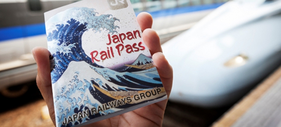

JR Pass — ваш билет в незабываемое путешествие по Японии!
Неограниченные поездки на сверхскоростных поездах синкансэн и железных дорогах JR по всей стране — от Токио до Хиросимы, от Киото до Саппоро.
Что такое JR PASS?
JR Pass (Japan Rail Pass) — это специальный проездной билет для иностранных туристов, который позволяет неограниченно пользоваться поездами, автобусами и паромами сети Japan Railways (JR) на территории Японии.
Он даёт:Безлимитные поездки на поездах JR (включая сверхскоростные синкансэны)
Свобода маршрута — спонтанно меняйте планы без доплат
Экономия — окупается за 2-3 дальние поездки
Подходит как туристам, планирующим перемещаться между городами, так и тем, кто ценит комфорт и гибкость
Почему стоит JRPass?
Экономия до 70%
Одна поездка на синкансэне стоит как 2 дня проездного!
Экономия до 70%
Одна поездка на синкансэне стоит как 2 дня проездного!
Экономия до 70%
Одна поездка на синкансэне стоит как 2 дня проездного!
Экономия до 70%
Одна поездка на синкансэне стоит как 2 дня проездного!
Экономия до 70%
Одна поездка на синкансэне стоит как 2 дня проездного!